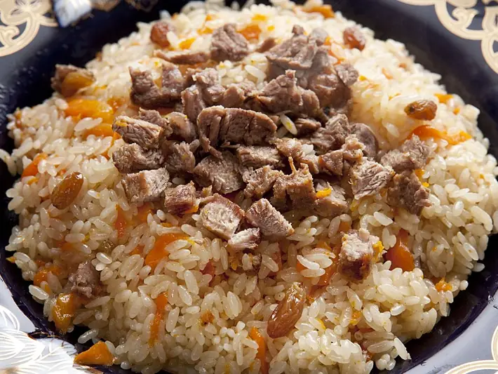

Фото: Mizu basyo at Japanese Wikipedia, CC BY-SA 3.0

Плов с говядиной
Рассыпчатый плов в казане на большую компанию
130 мин8 порц.880 ккал на порциюБ 33 · Ж 42 · У 95Среднеазиатская кухня
Продукты на 8 порц.
- Говядина1000 г
- Рис4 стак.
- Морковь9 шт
- Лук репчатый4 шт
- Чеснок2 шт
- Растительное масло1 стак.
- Зира2 ч. л.
- Соль1 ст. л.
- Вода6 стак.
- Перец чили по желанию1 шт
Как готовить
- Рис промойте в 5-6 водах до прозрачной воды и замочите в тёплой воде на 30 минут.
- Говядину нарежьте кубиками 3 см, лук - полукольцами, морковь - соломкой толщиной со спичку. Не трите морковь на тёрке.
- Сильно разогрейте масло в казане. Обжарьте мясо на сильном огне 10 минут до корочки, затем добавьте лук и жарьте ещё 5 минут до золотистого цвета.
- Добавьте морковь, жарьте 5 минут, не перемешивая часто. Посыпьте зирой, растерев её в ладонях.
- Залейте 600 мл горячей воды, добавьте соль и стручок перца. Тушите на слабом огне под крышкой 50 минут, пока мясо не станет мягким.
- Слейте воду с риса и выложите его ровным слоем поверх мяса, не перемешивая. Аккуратно влейте оставшуюся горячую воду, чтобы она покрыла рис на 1,5 см.
- Варите на сильном огне без крышки, пока вода не впитается. Воткните в рис целые головки чеснока.
- Сделайте палкой несколько отверстий до дна, накройте крышкой и томите на самом слабом огне 25 минут.
- Рис готов, если он мягкий и рассыпчатый. Перемешайте плов и подавайте.
Совет. Не открывайте крышку и не мешайте рис на последнем этапе. Плов становится кашей именно от перемешивания и лишней воды.